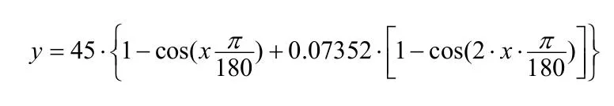

LSAT: Analiză computațională a semnăturii luminomorfice
Articol integral: Lightmorphic Signatures Analysis Toolkit
În această lucrare discutăm teoria utilizată în proiectarea unui set de instrumente de analiză SW a semnăturilor luminomorfice (LSAT).
Pe lângă faptul că oferă o funcționalitate de bază, aplicația software permite optimizări specifice datorită designului său modular și personalizabil.
Pentru a promova utilizarea sa și a inspira contribuții viitoare, LSAT este disponibil gratuit. Prin utilizarea unei rețele neuronale auto-supravegheate și a algoritmilor de învățare automată, LSAT oferă o interfață ușor de utilizat, având în același timp o documentație amplă.
Experimentele demonstrează că LSAT îmbunătățește activitățile de traducere a datelor semnăturilor luminomorfice în spectrograme utilizabile.
Prin funcțiile matematice furnizate, LSAT validează neliniaritatea întâlnită în procesul de conversie a datelor, asigurând în același timp performanțe ridicate ale algoritmilor de prognoză.
Volumele mari de date au fost prelucrate folosind algoritmi de inteligențăa artificială şi învăţare automată din ARXDE™.
Semnătura spațio-temporală a intensității luminoase pentru drumurile din Carpați
Articol integral: Spatiotemporal lightmorphic computing for Carpathian roads
Optimizarea consumului de energie prin anticiparea comportamentului vehiculului într-un mediu dinamic reprezintă un subiect activ de cercetare pentru industria auto.
Deoarece vehiculele sunt echipate din ce în ce mai mult cu sisteme de asistență la conducere care funcționează în condiții dinamice de conducere, o strategie specifică de economisire a energiei trebuie să ia în considerare particularitățile traiectoriei şi să prezică în timp real oportunitățile de economisire a energiei.
Cercetarea şi înțelegerea interacțiunilor dintre formele complexe de intensitate a luminii şi specificitatea spațiotemporală a traiectoriei este principalul obiectiv al cadrului de calcul al intensității luminoase prezentat pentru rețeaua rutieră formată din A1 şi DN7 din munții Carpați.
Sunt incluse locații alternative de pornire şi oprire, între următoarele oraşe majore: Bucureşti, Timişoara, Deva, Sibiu, Piteşti.
Fiecare măsurătoare a segmentului de traiectorie este compusă din diferite segmente definite ca lungimi de segmentare (SL) care caracterizează semnăturile luminoase şi profilul traiectoriei.
Variațiile de intensitate a luminii sunt conținute în tensorul de distribuție a luminii.
Când se analizează valorile măsurate, similitudinile dintre măsurători sunt capturate într-un set de date specific traiectoriei. Această simetrie de distribuție a luminii spațiotemporale este utilizată pentru a prezice evoluția unică a formei luminii virtuale.
Observarea variațiilor de intensitate a luminii oferă o perspectivă unică asupra traseului menționat.
Având un cadru pentru a caracteriza modelele structurale ale semnăturii luminoase pentru traiectorii rutiere specifice, se pot rezolva mai multe probleme din lumea reală, cum ar fi: realizarea unui echilibru energetic optim pentru traiectorii specifice sau estimarea precisă a fenomenelor de intensitate a luminii care pot avea impact asupra interacțiunii dintre vehicul şi mediul de călătorie.
Am folosit ARXDE™ pentru prelucrarea datelor şi imaginilor folosite la realizarea modelelor tridimensionale pentru semnăturile spaţio-temporale a intensităţii luminoase pentru drumurile din Carpaţi.
Modele de traiectorie predictivă ale vehiculelor folosind date izocrone
Articol integral: “Vehicle predictive trajectory patterns from isochronous data.” ArXiv abs/2010.05026 (2020)
În această lucrare este prezentată o metodă detaliată pentru evaluarea şi cartografierea modelelor de traiectorie izocrone prin utilizarea fuziunii de date video, respectiv a datelor furnizate de senzorul busolă HDMM01. Modelele predictive ale traiectoriei izocrone sunt derivate din valorile datelor având un orizont de timp predefinit. Astfel se poate identifica atăt comportamentul extrem de conducere, cât şi geometriile periculoase ale drumului.
Rezultatele acestui studiu arată că tiparele de traiectorie au succes în prezicerea evoluției probabile a unui tipar de traiectorie actual şi pot oferi evaluarea situațiilor de conducere viitoare.
Datele obținute din acest studiu pot fi utile ca referință în planificarea urbană viitoare pentru căile de conducere care asigură economie de energie, precum şi pentru îmbunătățirea proiectării şi ingineriei vehiculelor bazate pe măsurători dinamice cantitative şi relevante.


SIMULAREA REŢELELOR NEURONALE FOLOSIND MATLAB®
Articol integral: SIMPOZION ŞTIINŢIFIC STUDENŢESC – „35 de ani de învăţământ superior Hunedorean”, 20 – 21 mai 2005
Metoda descrisă pune accentul pe reținerea a cât mai multe caracteristici a funcției RBF(radial basis function).
Am folosit MATLAB® pentru a implemeta funcția de analiză RBF care descrie următoarea variație de parametrii:
Rețelele neuronale sunt în principiu o clasă de funcŧii ce pot fi implementate pentru orice fel de model (linear sau neliniar) şi în orice fel de rețea (cu un singur strat sau mai multe straturi).
Rețelele RBF sunt rețele formate din două straturi : nodurile de intrare, neuroni ascunşi cu funcții de bază nonliniare, şi neuroni de ieşire cu funcții de activare liniare sau nonliniare.
Sau folosit 25 de neuroni şi pentru fiecare iterație am ales varianta cu adăugarea a câte 5 noi neuroni de iterație. Dacă s-ar fi folosit un număr mai mic de neuroni s-ar fi obținut rezultate mult mai îndepărtate de valoarea impusă prin algoritmul de învățare al rețelei. Se exemplifică în următoarele grafice diferențele obținute pentru 5, 10, sau mai mulţi neuroni.
Se poate observa variația fidelității simulării odată cu creşterea numărului de neuroni folosiți de rețeau neuronală. Acest aspect poate fi folosit pentru o mare varietate de aplicații precum: recunoaşterea digitală a feței, detectarea mirosurilor, clasificarea imaginilor din punct de vedere al caracteristicilor de culoare, aplicații de predicție a anumitor fenomene.